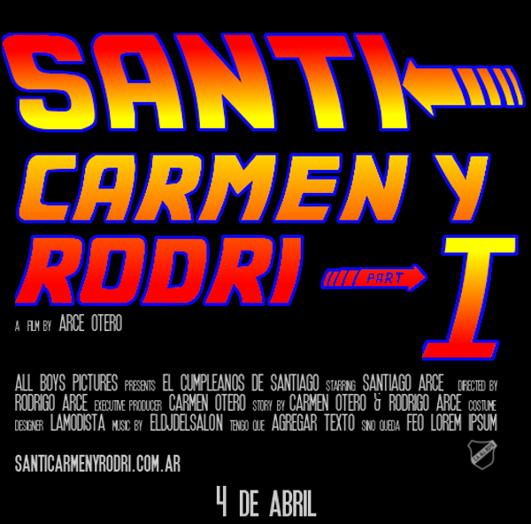

La familia Arce Otero te invitan el 4 de abril a partir de las 21 hs a participar de la fiesta del año.
Recepciones Perseo está ubicado en Avenida Gaona 1629, Caballito, Capital Federal. No te podes perder, queda a 4 cuadras del departamento.
Vamos a festejar el primer año de Santiago, su bautismo y el casamiento de Carmen y Rodrigo. Por eso es parte I, II y III, además nos gusta Volver al Futuro.